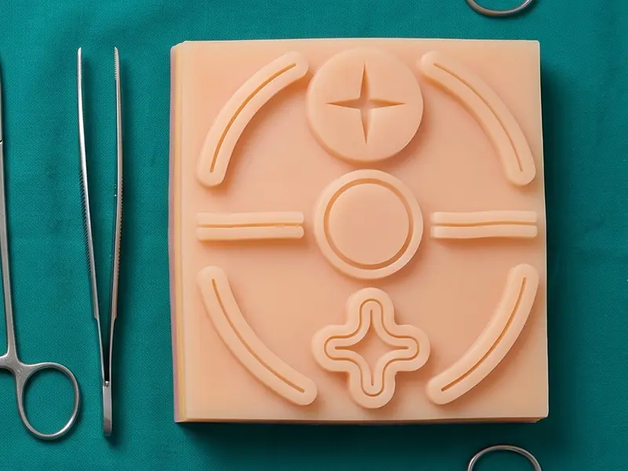
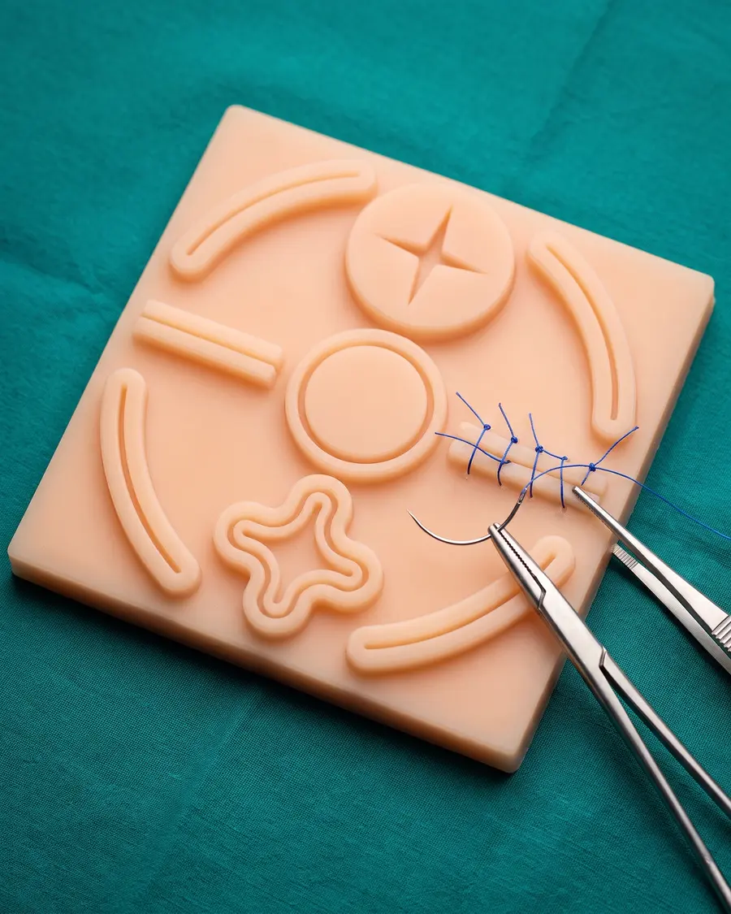
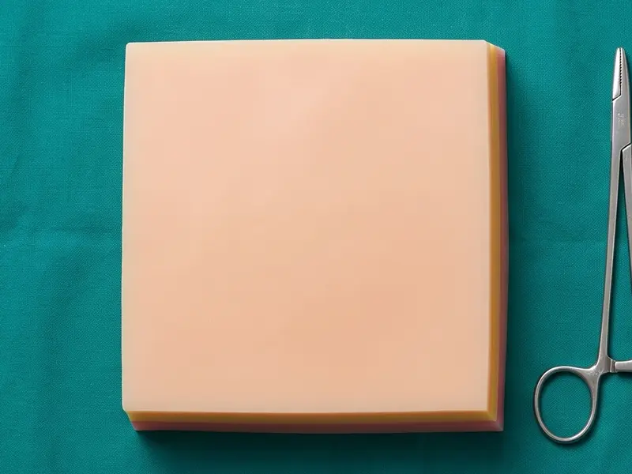
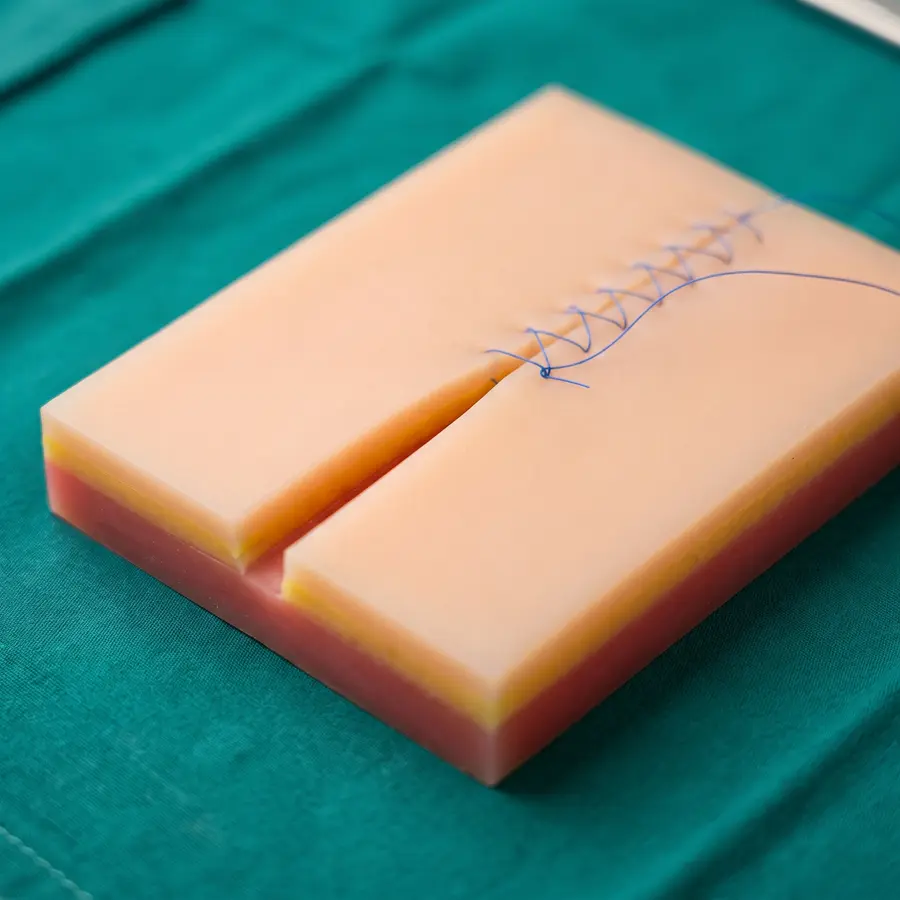
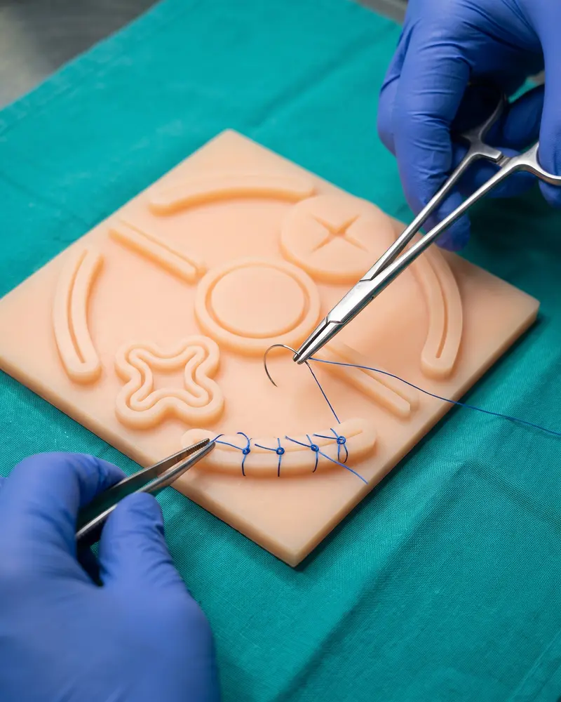

Ref. BS-02Pad con heridas
Llegas y suturas. Trae heridas ya marcadas para practicar distintas formas y direcciones.
Lo quiero con heridasPads de sutura · Hecho en Perú
Pads de silicona con piel, grasa y músculo que se cortan y se cosen como tejido. Practica en tu casa, retira los puntos y vuelve a empezar.

Los modelos
Los dos tienen las 3 capas. La diferencia es si tú haces el corte o si las heridas ya vienen listas para suturar.

Ref. BS-02Llegas y suturas. Trae heridas ya marcadas para practicar distintas formas y direcciones.
Lo quiero con heridas
Ref. BS-01Tú haces el corte con bisturí, del largo y la forma que quieras, y practicas el cierre por planos.
Lo quiero lisoDinos cuántos pads necesitan y te pasamos el precio para el grupo.

Por dentro
No es una lámina: cada capa se siente distinta bajo la aguja, para que aprendas a cerrar plano por plano.
Aquí haces los puntos que se ven: simples, colchoneros e intradérmicos, cuidando que los bordes queden parejos.
Practicas puntos subcutáneos para no dejar espacio muerto debajo de la piel.
Cierras primero lo profundo y luego subes: el orden que te van a pedir en cirugía.
Qué vas a practicar
Todo lo que se pide en el curso de cirugía y en las prácticas de emergencia, en un mismo pad.
La base de todo: cada punto con su propio nudo.
Un solo hilo de punta a punta, rápido y hermético.
Evierte los bordes cuando la piel tiende a hundirse.
Reparte la tensión en heridas que tiran.
Va por dentro de la piel y casi no deja marca.
Con porta agujas, hasta que te salga sin pensar.
Hecho en Perú
Diseñamos los moldes, los imprimimos en 3D y vaciamos la silicona capa por capa. Por eso cada pad sale con sus tres capas parejas.

Cómo pedir
Sin registrarte en ninguna página: nos escribes y lo coordinamos contigo.
Dinos qué modelo quieres y cuántos.
Te pasamos el precio, el costo de envío y cómo pagar.
Haces el pago y preparamos tu pedido.
En Lima por delivery y a provincias por agencia de envíos.
Preguntas
El pad con heridas: llegas y suturas, sin preocuparte por el corte. Cuando ya quieras practicar cortes y cierre por planos, el liso de 3 capas.
Sí. Retiras los puntos y vuelves a suturar en otra zona del pad.
Sí, a todo el Perú. En Lima por delivery y a provincias por agencia de envíos; te pasamos el costo antes de pagar.
Escríbenos y te contamos qué incluye cada pedido y qué te conviene tener para empezar.
Sí. Dinos cuántos pads necesitan y te pasamos el precio para el grupo.
Pídelo hoy y empieza a practicar esta semana.